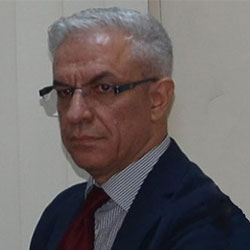
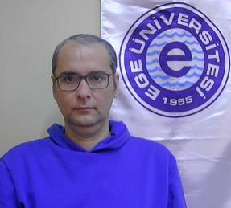
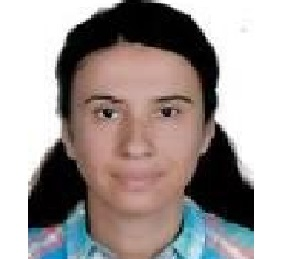
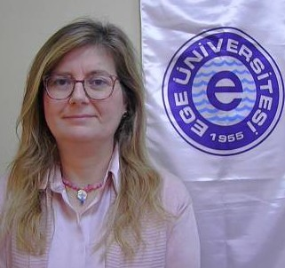
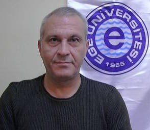
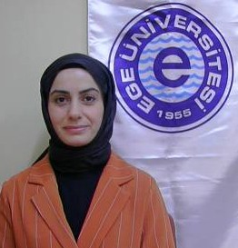
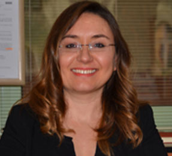
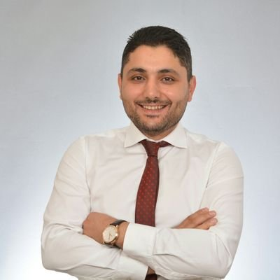
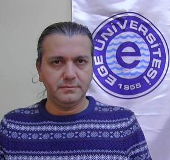

Öğretim Üyesi
Dahili: 7108
Email: ahmet.kaya@ege.edu.tr
Lisans: Ege Üniversitesi İstatistik
Yüksek Lisans: Ege Üniversitesi İstatistik
Doktora: Dokuz Eylül Üniversitesi Ekonometri
YÖKAK Temel Alan: Karar Destek Sistemleri, Sistem Analiz, Tasarım ve Geliştirme, Veri Bilimi ve Analitiği

Program Koordinatörü
Dahili: 7126
Email: oguz.donmez@ege.edu.tr
Lisans: Ege Üniversitesi Bilgisayar Mühendisliği
Yüksek Lisans: Ege Üniversitesi Bilgisayar Mühendisliği
Doktora: Ege Üniversitesi Bilgisayar Mühendisliği
YÖKAK Temel Alan: Bilgisayar Yazılımı, Programlama Dilleri
Program Danışmanı, ERASMUS Koordinatörü, ORHUN Koordinatörü
Dahili: 7111
Email: yesim.aktas@ege.edu.tr
Lisans: Ege Üniversitesi Bilgisayar Mühendisliği
Yüksek Lisans: Süleyman Demirel Üniversitesi Bilgisayar Mühendisliği, Fachhochschule Schmalkalden Informatik
Doktora: Süleyman Demirel Üniversitesi Bilgisayar Mühendisliği(devam ediyor)
YÖKAK Temel Alan: Yapay Zeka, Doğal Dil İşleme, Bulanık Mantık

Dahili: 71...
Email: mine.yoldas.orhon@ege.edu.tr
Lisans: Pamukkale Üniversitesi Bilgisayar Mühendisliği
Yüksek Lisans: Orta Doğu Teknik Üniversitesi
Doktora: Ege Üniversitesi Bilgisayar Mühendisliği(devam ediyor)
YÖKAK Temel Alan: Biyoenformatik, Makine Öğrenmesi

Program Koordinatörü, ÖSYM Koordinatörü
Dahili: 7159
Email: nur.ceyhan.guvensen@ege.edu.tr
Lisans: Ege Üniversitesi Biyoloji
Yüksek Lisans: Muğla Sıtkı Koçman Üniversitesi Biyoloji
Doktora: Ege Üniversitesi Biyoloji
YÖKAK Temel Alan: Mikrobiyoloji, Bakteriyoloji, Biyoteknoloji
Dahili: 71..
Email: unal.riza.yaman@ege.edu.tr
Lisans: Ege Üniversitesi Gıda Mühendisliği
Yüksek Lisans: Ege Üniversitesi Gıda Mühendisliği
Doktora: Ege Üniversitesi Gıda Mühendisliği
YÖKAK Temel Alan: Gıda Teknolojileri, Meyve ve Sebze Teknolojisi, Temel İşlemler

Müdür Yardımcısı, Program Danışmanı
Dahili: 7125
Email: cesur.mehenktas@ege.edu.tr
Lisans: Ege Üniversitesi Gıda Mühendisliği
Yüksek Lisans: Ege Üniversitesi Gıda Mühendisliği
Doktora: Ege Üniversitesi Gıda Mühendisliği
YÖKAK Temel Alan: Gıda Bilimi, Gıda Teknolojileri, Süt Teknolojisi

Kurum Dışı Görevlendirme ile Gelen (Dicle Üniversitesi)
Dahili: 7179
Email: hatice.ertem.oztekin@ege.edu.tr
Lisans: Atatürk Üniversitesi Gıda Mühendisliği
Yüksek Lisans: Atatürk Üniversitesi Gıda Mühendisliği
Doktora: Ege Üniversitesi Gıda Mühendisliği (devam ediyor)
YÖKAK Temel Alan: Gıda Kimyası, Süt Teknolojisi, Gıda Teknolojisi

Program Danışmanı
Dahili: 7129
Email: meryem.odabasi@ege.edu.tr
Lisans: Ege Üniversitesi Matematik
Yüksek Lisans: Ege Üniversitesi Matematik
Doktora: Ege Üniversitesi Matematik
YÖKAK Temel Alan: Uygulamalı Matematik

Kurum Dışı Görevlendirme ile Giden (İnönü Üniversitesi)
Dahili: 71..
Email: recep.akan@ege.edu.tr
Lisans: Dokuz Eylül Üniversitesi Maliye
Yüksek Lisans: Dokuz Eylül Üniversitesi Maliye
Doktora: Dokuz Eylül Üniversitesi Maliye
YÖKAK Temel Alan: Kamu Ekonomisi, Kamu Maliyesi, Mali Hukuk

Müdür Yardımcısı, Program Koordinatörü, Birim Kalite Koordinatörü
Dahili: 7120
Email: yilmaz.civiroglu@ege.edu.tr
Lisans: Karadeniz Teknik Üniversitesi Orman Endüstri Mühendisliği
Yüksek Lisans: Selçuk Üniversitesi İşletme
Doktora:
YÖKAK Temel Alan: Muhasebe